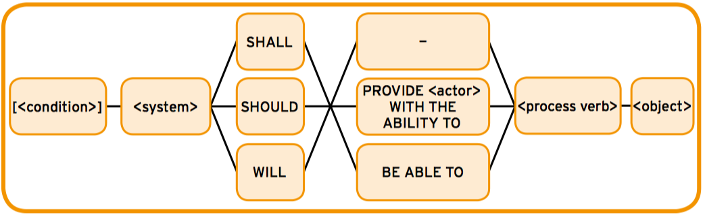
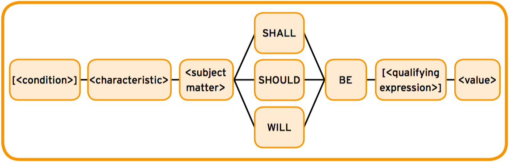
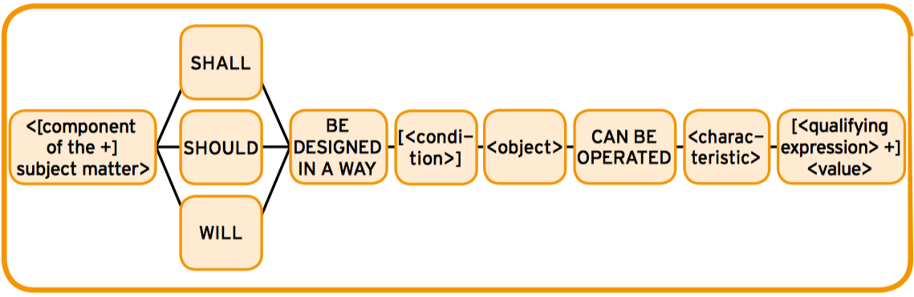
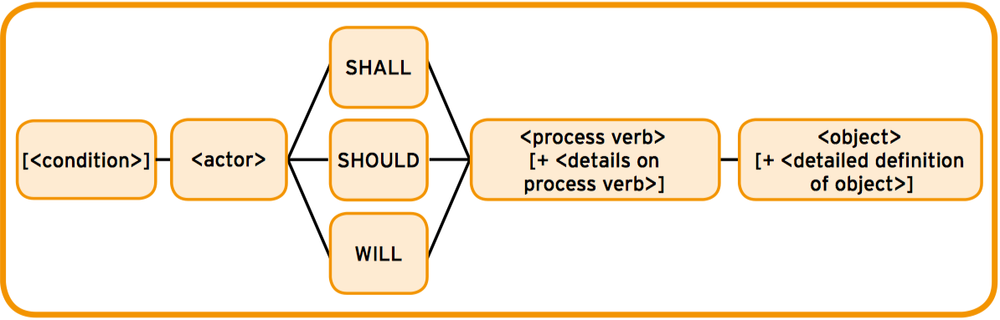
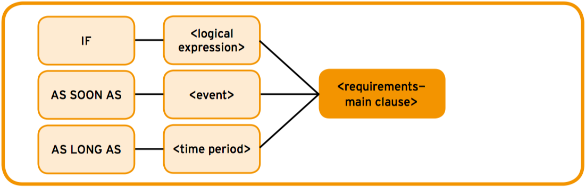
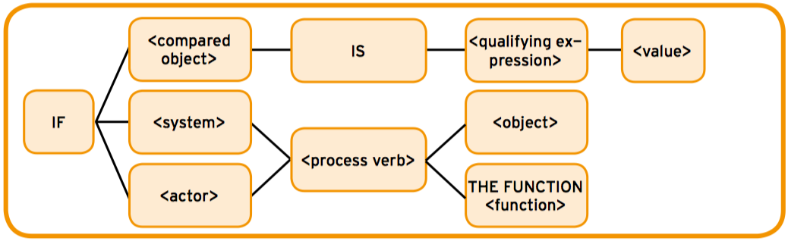
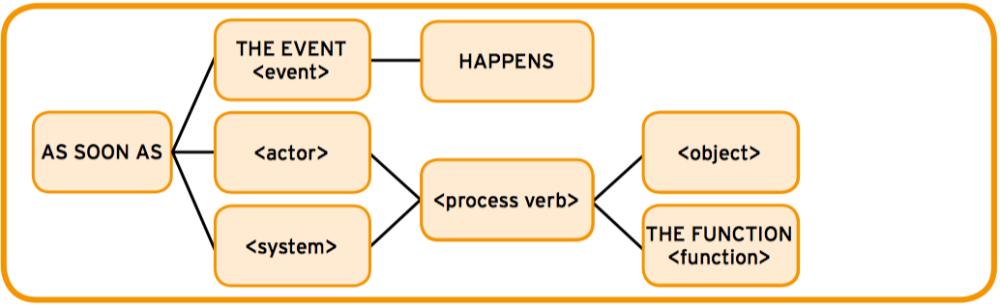
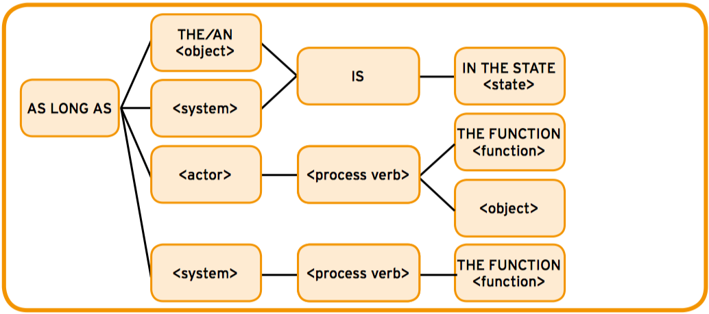

Template-systems evaluation
Welcome to this test, which evaluates the usability of different template-systems for requirement specifications.
The test is part of an evaluation handled by Francisco José Caballero Cerezo, an ERASMUS student at University of Koblenz-Landau (Germany), as part of his Bachelor's thesis, "Comparative evaluation of template-systems for requirements specifications".
The thesis is supervised by Prof. Dr. Jan Jürjens and M. Sc. Katharina Großer, of the Software Engineering Research Group at University of Koblenz-Landau, as part of the T-Reqs project.
The T-Reqs project, in cooperation with the European Space Agency (ESA), is focused on technologies that improve the quality of requirements relating to precision, accuracy and completeness by the use of ontologies.
Template-systems evaluation
Before starting the test, we would like to ask you some questions about your previous experience.
Introduction to Template-systems
Introduction to template-systems
Software requirements are often written in natural language, which allows to write requirements quickly, making them easy to read and understand by the reader. Nevertheless, there can appear some problems that could hamper the compliance of the quality criteria [MWHN09]:
Ambiguity, untestability, inconsistency, vagueness, complexity, omissions, wordiness, innapropiate implementation details...
Graphical and formal notations (based upon elementary mathematics) can be used to specify precise, unambiguous and structured requirements. An example of formal notation is Z, a mathematical language with a powerful structuring mechanism [WD96]. However, formal notations require more training in order to write and understand requirements.
Semi-formal notations, like template-systems (also called boilerplates) and keywords-driven languages, are approaches that facilitates the satisfying of the quality criteria by a combination of templates (syntax) and attributes (semantics).
There currently exist many different notations. In this test, we are going to compare MASTER template-system and EARS template-system.
MASTER
In 2014, Rupp et al. presented the MASTER (Mustergültige Anforderungen - die SOPHIST Templates für Requirements) template-system [RdS14b].
It allows writing requirement specifications through some basic types: functional and non-functional requirements (divided in property, environment and process requirements).
Functional requirements
Functional requirements can be specified with the FunctionalMASTeR template, shown in Figure 1.1. The uppercase words represent the template fixed values and the lowercase words with angle brackets represent the attributes that have to be filled in [Gro15].
The elements are:
- Condition: Shall be specified with the ConditionMASTER, LogicMASTER, EventMASTER or TimeMASTER templates [RdS14b].
- System: Represents the system or component that should provide the functionality.
- Liability: Modal verbs are used to express liability:
-
- Shall: Statement is legal binding and mandatory.
- Should: Statement is desired, but not mandatory.
- Will: Statement is recommended, but not mandatory.
- Activity type: The different types of system activities are the following [RdS14a]:
-
- Independent system action: (-) The system performs the process by itself.
- User interaction: (PROVIDE <actor> WITH THE ABILITY TO) The system provides the user with some process functionality.
- Interface requirement: (BE ABLE TO) The system performs the process dependent on a third factor.
- Process verb: Represents the process: procedures (functionality) and actions to be provided by the system [RdS14a].
Property requirements
Property requirements describe properties of the system. PropertyMASTeR template (Figure 1.2) is proposed.
According to Großer [Gro15]:
- Characteristic: Is the property of the subject matter.
- Subject matter: Represents the system, sub-system, component, function...
- Qualifying expression: Specifies the range of the value.
- Value: Is connected with the qualifying expression through the verb to BE.
Environment requirements
Technological requirements of the system’s environment are described with EnvironmentMASTeR template (Figure 1.3). The fixed values are designed in a way that make the requirement belongs to the system and not the environment [Gro15].
Process requirements
Process requirements can be worded with the ProcessMASTeR template (Figure 1.4), which is based on the independent system action version of the FunctionalMASTeR template. Process requirements are related to activities or legal-contractual requirements, as well as non-functional requirements. In this template, the subject of the requirement is an actor and not the system [Gro15].
Conditions
In the case that the functionality is only given or provided under certain logical or temporal conditions, the ConditionMASTeR template must be applied (Figure 1.5) [RdS14a].
A more precise specification for conditions can be obtained by the use of LogicMASTeR, EventMASTeR or TimeMASTeR templates.
LogicMASTeR (Figure 1.6) is used to specify logical conditions. The logical statement is made through a compared object, an actor or a system [RdS14b].
With EventMASTeR (Figure 1.7), requirements are initiated as soon as the event condition is satisfied. The term event summarizes the possible events that may affect the system [RdS14b].
TimeMASTeR (Figure 1.8) is used to specify a certain period of time when a system or object may have temporary behaviours. Both, conditions and requirements, end at the same time [RdS14b].
EARS
EARS (Easy Approach to Requirements Syntax) template-system was created by Mavin et al. and presented at the 17th IEEE International Requirements Engineering Conference [MWHN09].
<optional preconditions> <optional trigger> the <system name> shall <system response>
Listing 1.1: Generic requirement syntax.
The simplest structure of EARS system is the generic requirement syntax (shown in Listing 1.1). According to Marvin et al. [MWHN09], their elements are:
- Precondition: Necessary conditions to invoke the requirement.
- Trigger: Event that initiates the requirement.
- System response: Represents the system behaviour, which is activated if and only if, the preconditions and trigger are true.
Mavin et al. stated that the generic requirement syntax is specialized into four types (Ubiquitous, Event-driven, Unwanted behaviours, State-driven and Optional features), described in the following subsections.
Ubiquitous requirements
An ubiquitous requirement defines a fundamental property of the system and has no preconditions or trigger. The format is shown in Listing 1.2.
The <system name> shall <system response>
Listing 1.2: Ubiquitous requirements format.
Event-driven requirements
An Event-driven requirement is activated only when a trigger occurs or is detected. It uses the keyword WHEN. Listing 1.3 shows its format.
WHEN <optional preconditions> <optional trigger> the <system name> shall <system response>
Listing 1.3: Event-driven requirements format.
Unwanted behaviours
Requirements for unwanted behaviours (failures, error conditions, disturbances, deviations...) use IF and THEN keywords and have the format shown in Listing 1.4.
IF <optional preconditions> <optional trigger>, THEN the <system name> shall <system response>
Listing 1.4: Unwanted behaviours format.
State-driven requirements
State-driven requirements are active while the system is in a specific state. They use the keyword WHILE or DURING (Listing 1.5).
WHILE <in a specific state> the <system name> shall <system response>
Listing 1.5: Unwanted behaviours format.
Optional requirements
Optional requirements are invoked only if the system includes a special feature. They use WHERE keyword, as shown in Listing 1.6.
WHERE <feature is included> the <system name> shall <system response>
Listing 1.6: Optional requirements format..
Complex requirements
Requirements with complex conditional clauses can be defined with a combination of the keywords WHEN, IF and THEN, WHILE and WHERE.
References
[Gro15] Katharina Großer. Investigating the use of ontology techniques as a support for on-board software requirement engineering, 2015.
[MWHN09] A. Mavin, P. Wilkinson, A. Harwood, and M. Novak. EARS (Easy Approach to Requirements Syntax). 17th IEEE International Requirements Engineering Conference, 2009.
[RdS14a] Chris Rupp and die SOPHISTen. Requirements Templates - The Blueprint of your Requirement. SOPHIST GmbH, 2014.
[RdS14b] Chris Rupp and die SOPHISTen. Schablonen für alle Fälle. SOPHIST GmbH, 2014.
Before starting
The test is divided in two parts, reading and writing, and it should take around 30 minutes.
The answers are anonymous, it can only be completed once and it has no options to go back, pause or resume.
Please check that you have a stable Internet connection
Be sure that you have understood the concepts of template-systems, MASTER and EARS (*)
Before continuing, if you have any question regarding the test or the template-systems, please contact:
Reading Test
In this section of the test, you will be asked to read requirements (specified in natural language, MASTER or EARS) and answer some questions.
The requirements are based in an open source project, NBDiff. The main documentation directory is available here and its SRS is available here.
NBDiff serve as a tool for users who work with IPython Notebooks. It provides a means of viewing changes made to IPython Notebook files and resolving merge conflicts.
{{item.req}}
{{item.question}}
| # | Statements | Do you agree or disagree? |
|---|---|---|
| 1 | Natural language requirements are easy to understand. |
|
| 2 | MASTER requirements are easy to understand. |
|
| 3 | EARS requirements are easy to understand. |
|
| 4 | MASTER requirements are more complete than natural language requirements. |
|
| 5 | EARS requirements are more complete than natural language requirements. |
|
Writing Test
In this part of the test, we ask you to read some descriptions of the NBDiff system.
You will have to specify requirements to cover the description using MASTER, EARS or natural language.
The descriptions are based on the requirements of the open source project NBDiff, which documentation directory is available here and its SRS is available here.
Description of the System
{{item.description}}
Controls
Requirements
Conditions
Preview
Requirements:
Specify your requirements here.
To create a new MASTER requirement or a new term, use the Controls menu.
{{functionalreq[0].to_string}}
{{propertyreq[0].to_string}}
{{environmentreq[0].to_string}}
{{processreq[0].to_string}}
{{condition[1].to_string}}
Controls
Requirements
Preview
Requirements:
Specify your requirements here.
To create a new EARS requirement or a new term, use the Controls menu.
{{ubiquitousreq[0].to_string}}
{{eventreq[0].to_string}}
{{unwantedreq[0].to_string}}
{{statereq[0].to_string}}
{{optionalreq[0].to_string}}
{{complexreq[0].to_string}}
Controls
Controls
Preview
Glossary:
Term-{{$index+1}} {{term.name}}: {{term.definition ||"-"}}
Define your terms here.
To create a new term, use the Controls menu.
| # | Statements | Do you agree or disagree? |
|---|---|---|
| 1 | Descriptions were easy to specify in MASTER. |
|
| 2 | Descriptions were easy to specify in EARS. |
|
| 3 | Descriptions were easy to specify in natural language. |
|
| 4 | MASTER contains a full set of templates. |
|
| 5 | EARS contains a full set of templates. |
|
Thank you a lot for your collaboration.
You have reached the end of the test.
Your test ID is: Show test ID {{userID}}
For further information, feel free to contact to:
The estimated completion date of the evaluation is September 13, 2016.
The thesis will be published and a digital copy can be sent to whom may be interested.